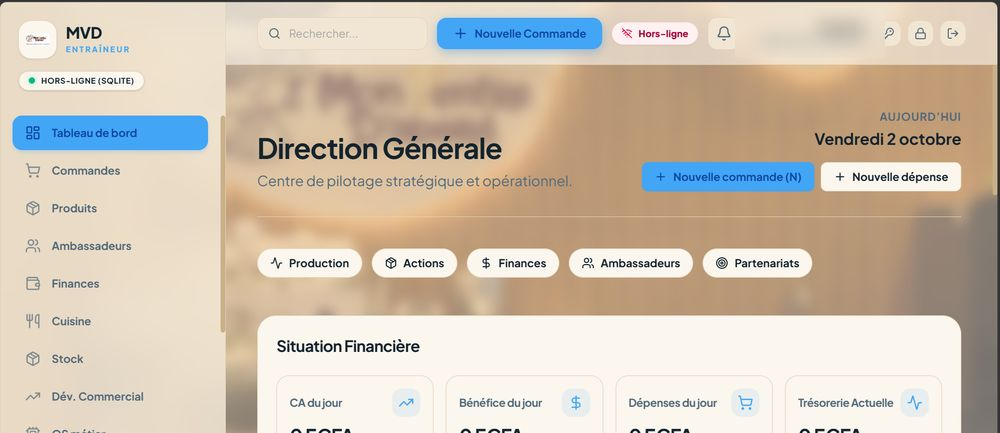
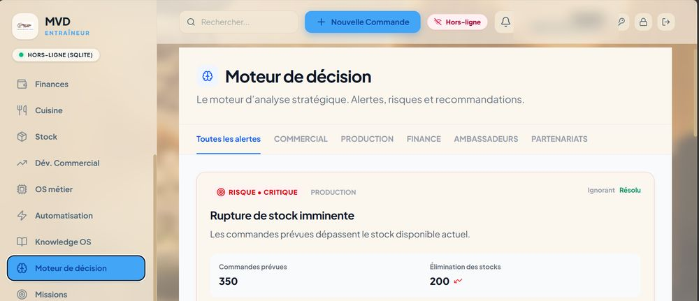
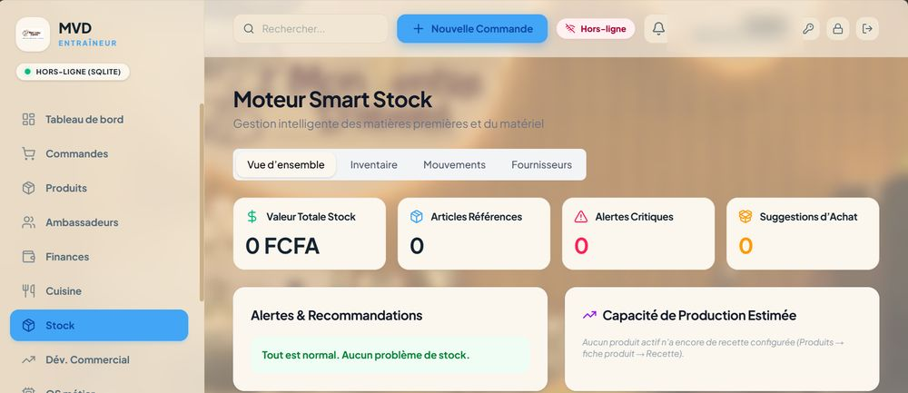
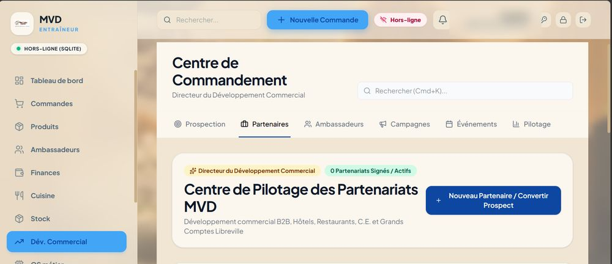
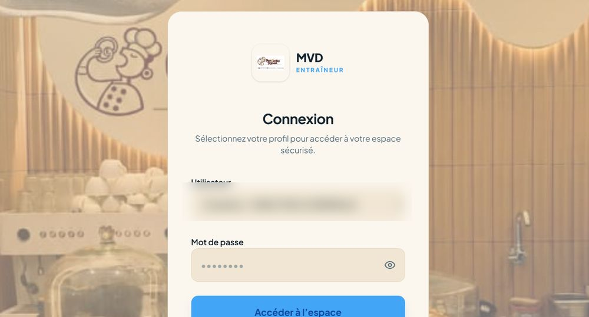
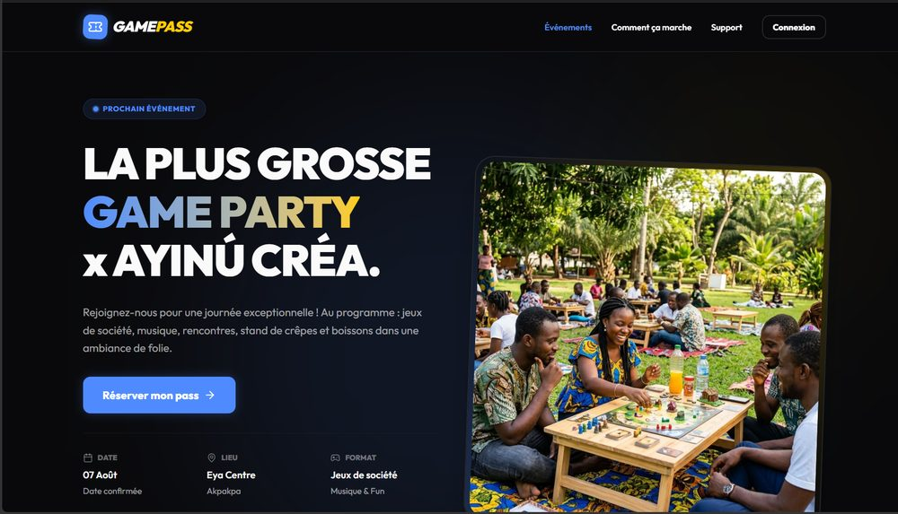
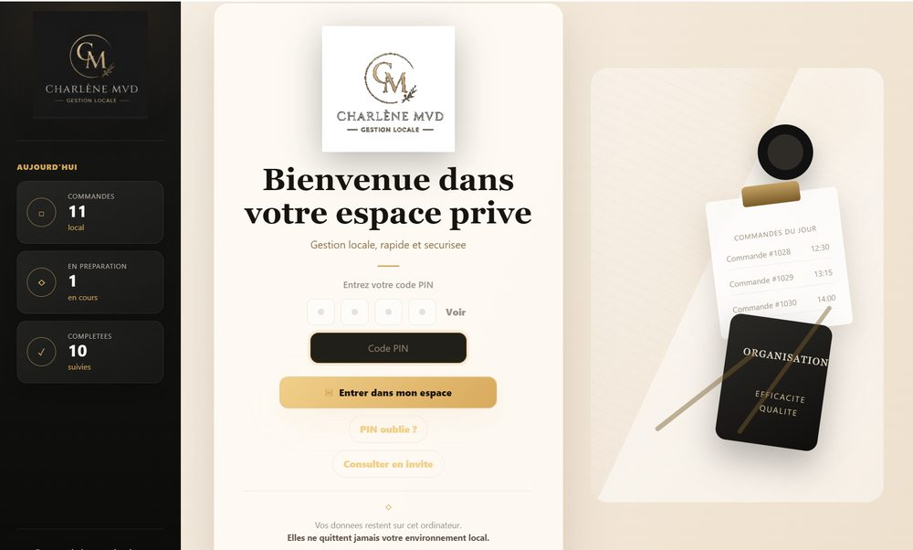
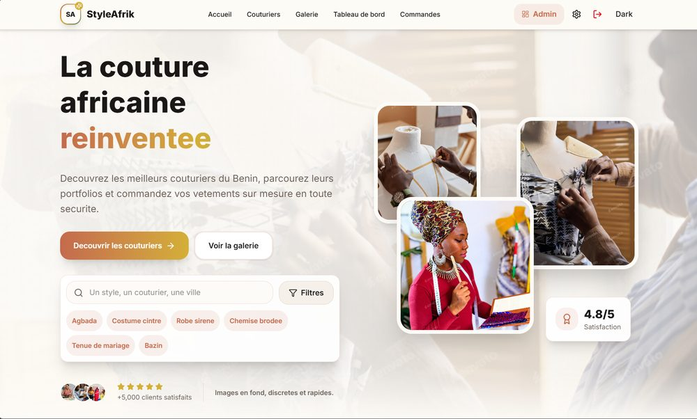
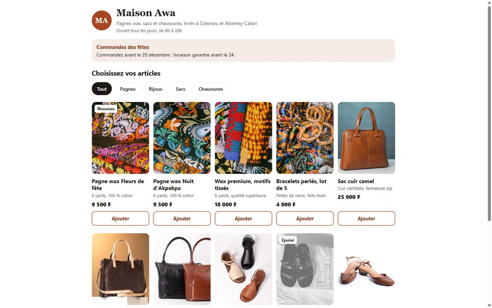
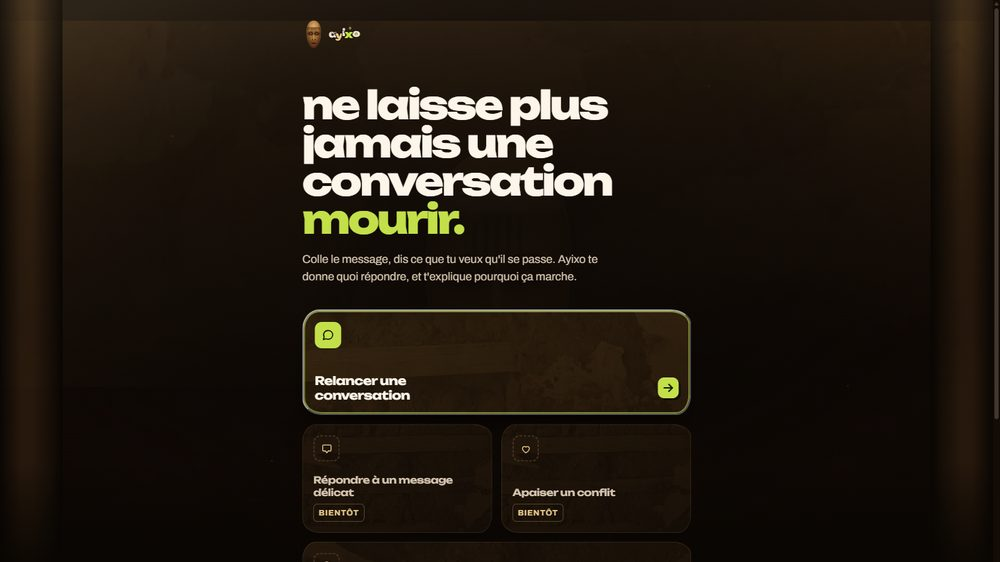

Un projet d’entreprise plus large, avec une équipe et de la maintenance, je ne le prends
pas seul : je le porte avec SenseLab, la société d’ingénierie logicielle que
je co-dirige à Cotonou.
Ce que j’ai construit
Chaque projet porte son statut réel. Un portfolio qui ne montre que le fini ment sur le
métier : construire, c’est avoir en permanence des choses en ligne, des choses en
chantier et des choses en pause.
En ligne

Tableau de bord

Moteur de décision

Stock et matières

Développement commercial

Accès par profil
MVD Manager
La version aboutie de Charlène Orders
D’abord il y a eu Charlène Orders, un logiciel posé sur l’ordinateur de la
direction. La directrice générale s’en est servie tous les jours et m’a fait ses
retours. Quand la marque a commencé à être connue et que l’activité a grossi, ces
retours ne tenaient plus dans l’outil de départ. MVD Manager est né de là :
pas une idée, une deuxième version écrite à partir de l’usage réel.
Seize modules couvrent toute la maison, des commandes à la cuisine, du stock aux
finances, des ambassadeurs au développement commercial. Chacun voit son poste et rien
d’autre. 208 fichiers, 35 894 lignes, un moteur de calcul qui tient les marges
et un moteur de décision qui lève les alertes avant qu’elles coûtent.
En français et en anglais, avec un espace éditorial relié à un gestionnaire de contenu
pour que mon associé publie sans me demander. En production, et je continue de le
retravailler. C’est le projet sur lequel j’ai le plus mesuré, et les chiffres plus bas
en viennent.
Next.js · React · Sanity · bilingue
En ligne

GamePass
La billetterie d’un vrai événement
Réservation, validation des paiements, envoi du billet, code à scanner et contrôle à
l’entrée le jour même. C’est le seul de mes projets qui a eu à tenir une porte un soir
donné, avec de vraies personnes qui attendaient devant.
React · TypeScript · Google Apps Script
Hors ligne, livré

Charlène Orders
Le point de départ de MVD Manager
Un logiciel posé sur l’ordinateur de la direction d’une pâtisserie : commandes,
paiements, stock, livreurs. Il fonctionne sans connexion, parce que la boutique n’en a
pas toujours une. C’est son usage quotidien, et les retours qui sont venus avec, qui
ont donné MVD Manager.
Electron · React · base locale
En local, pas terminé

StyleAfrik
Mon mémoire de licence, soutenu
Une plateforme reliant les stylistes à leurs clientes : créations, demandes, suivi
des commandes. Elle tourne sur ma machine et n’a jamais été mise en ligne. Je le dis
plutôt que de laisser croire le contraire.
Analyse métier · modélisation · web
Le travail que la machine peut faire à votre place
Dans une petite entreprise, la même personne vend, encaisse, relance et compte. Ce n’est pas
un problème de courage, c’est un problème de temps.
En service
La commande arrive déjà écrite
Votre cliente choisit sur une page, et la commande tombe sur votre WhatsApp, complète
et numérotée. Plus de « c’est combien ? » répété trente fois par jour,
plus de commande perdue au milieu d’une conversation.
Ce que ça vous rend : vos soirées, et les commandes que vous oubliiez.
En service
L’alerte avant la rupture, pas après
Le système compare ce qui est commandé à ce qui reste en stock, et vous prévient
avant que ça manque, avec ce qu’il faut acheter.
Ce que ça vous rend : les ventes que vous ratez quand il n’y a plus rien.
Je sais le construire
Le client qui n’a pas payé, relancé sans vous
La liste de ceux qui doivent, et un message qui part tout seul, au bon moment,
poliment. C’est là que dort le plus d’argent dans une petite entreprise : pas
chez ceux qui refusent de payer, chez ceux que personne n’a relancés.
Ce que ça vous rend : de l’argent déjà gagné, mais jamais encaissé.
Je sais le construire
Le rapport du lundi matin
Combien vous avez vendu, combien vous avez dépensé, et ce qu’il reste. Envoyé chaque
lundi, sans que personne ne compile quoi que ce soit.
Ce que ça vous rend : la demi-journée que vous passiez à faire les comptes.
Je sais le construire
Le rendez-vous rappelé la veille
Un message automatique la veille, pour les cliniques, les salons, les écoles, les
ateliers. Le rendez-vous oublié est le revenu le plus bête à perdre.
Ce que ça vous rend : les places vides de votre journée.
Je sais le construire
La fiche client qui se remplit toute seule
Chaque commande, chaque demande, chaque appel alimente une base propre. Le jour où
vous voulez relancer vos clients, la liste existe déjà.
Ce que ça vous rend : le fichier client que vous n’avez jamais eu le temps de faire.
Ce que je ne vais pas vous raconter. Je me forme à l’automatisation en ce moment. Les
deux premières de cette liste tournent déjà dans mes projets, vous pouvez les voir plus haut.
Les quatre autres, je sais les construire et je ne les ai pas encore vendues. Je préfère vous
le dire maintenant que vous le laisser découvrir après.
Ce que je lance en ce moment
Ce que personne ne montre jamais, et qui dit pourtant le plus de choses sur quelqu’un :
ce qu’il a sur l’établi. Rien de ce qui suit n’est terminé. Tout existe déjà.
En cours

Pack Fêtes
La page de commande qui envoie tout sur le WhatsApp de la boutique, sans autorisation à
demander et sans coût par message. Démonstration testée de bout en bout.
En pause

Ayixo
Il y a des messages qu’on écrit dix fois et qu’on n’envoie jamais. Reprendre contact
après des mois de silence, répondre à un client fâché, demander à être payé sans se
fâcher. Ayixo lit la situation et propose quoi répondre, puis explique pourquoi ça
marche. Du fon ayi, le cœur, et xó, la parole.
L’interface existe, le moteur est écrit et testé. Je l’ai mis en pause pour me
concentrer sur ce qui rapporte maintenant. Savoir arrêter fait partie du métier, mais
je n’ai jamais su si le problème était le mien ou celui de tout le monde.
Est-ce que je devrais le finir ?
Si ce problème vous parle, dites-le-moi. Si plusieurs personnes le demandent, je le
reprends, et vous serez prévenu le jour où il sort.
Un robot qui répond seul aux questions courantes d’une boutique. Étude faite, construction
en janvier. On ne touche jamais au numéro d’une commerçante pendant son mois le plus
chargé.
Ce que j’ai mesuré
Je ne mets en avant qu’une seule preuve chiffrée, celle-ci. Elle vient du site SenseLab,
relevée dans le navigateur avant et après mon travail, sur le site construit et non sur une
page de test. Tout ce que je ne peux pas mesurer, je ne l’écris pas.
Poids de la page d’accueil
8 257 Ko devenus1 989 Ko
Premier affichage, en local
3,5 s devenues0,74 s
En production, sur un téléphone en 4G bridée
1,27 s
Pourquoi j’insiste là-dessus : ici, un visiteur paie sa connexion. Une page lourde n’est
pas un défaut technique, c’est un client qui ferme l’onglet avant d’avoir vu votre offre.
D’où je viens
Licence en Systèmes Informatiques et LogicielsMémoire soutenu sur la plateforme StyleAfrik
Co-fondateur, Directeur des Opérations et du Développement CommercialSenseLab, ingénierie logicielle, Cotonou
Directeur du Développement CommercialMon Ventre D’Abord, pâtisserie
Stage, systèmes d’information et supportLoterie Nationale du Bénin
Parlons-en
Dites-moi ce qui ne va pas aujourd’hui dans votre activité. Si je ne suis pas la bonne
personne, je vous le dirai, et je vous dirai qui l’est.